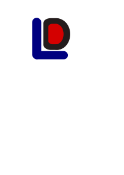

| Scratch | Snap | Blockly | Python | Primer | Viri |
Z naglim razvojem tehnologije in integracije le-te v naša vsakdanja življenja se učenci osnovnih in srednjih šol vse bolj pogosto in zgodaj srečujejo s koncepti računalništva in programiranja. Za učenje slednjega seveda bistven pomen drži razvoj algoritmičnega načina razmišljanja, ki nam programiranje močno olajša in racionalizira. Tu se pojavi problem; kateri programski jeziki so primerni za mlajše, neizkušene programerje začetnike? S tem namenom je na tej spletni strani predstavljenih nekaj programskih jezikov, ki so primerni.
Zakaj je znanje programiranja korist za otroka? Izkaže se, da razvijejo veščine za sistematično reševanje problemov, izzivajo svojo kreativnost, inovativnost in izboljšajo logično razmišljanje. V večini se je učencem najlažje učiti s pomočjo vizualnih stimulacij, ker si potek programa lažje predstavljajo in zapomnijo določene vzorce. Zato so vizualni programski jeziki, npr. Scratch idealni za nadobudne programerje. Ko postanejo dovolj samozavestni s svojimi programerskimi veščinami, so pripravljeni na preskok na bolj ''abstraktne'' jezike. (FunTech)
Za začetek bom namenil nekaj besed konceptu ''block coding''-a, saj bo naslednjih nekaj jezikov temeljilo na le-temu. V splošnem to pomeni, da je koda namesto v tekstovnem formatu predstavljena z tako imenovanimi ''bloki''. Te bloke nato sestavljamo skupaj in razporejamo po vrsticah, da ustvarimo naše programe. Bloki so ustrezno pobarvani glede na njihove vloge - spremenljivke, zanke, operatorji, logični pogoji... S pomočjo takšnega načina programiranja učenci lažje razumejo osnove in koncepte algoritmičnih postopkov, saj se učijo preko vizualnih stimulacij, namesto da bi bili že takoj zamorjeni z bolj ali manj zapleteno sintakso tekstovnih programskih jezikov. (Codingal) 